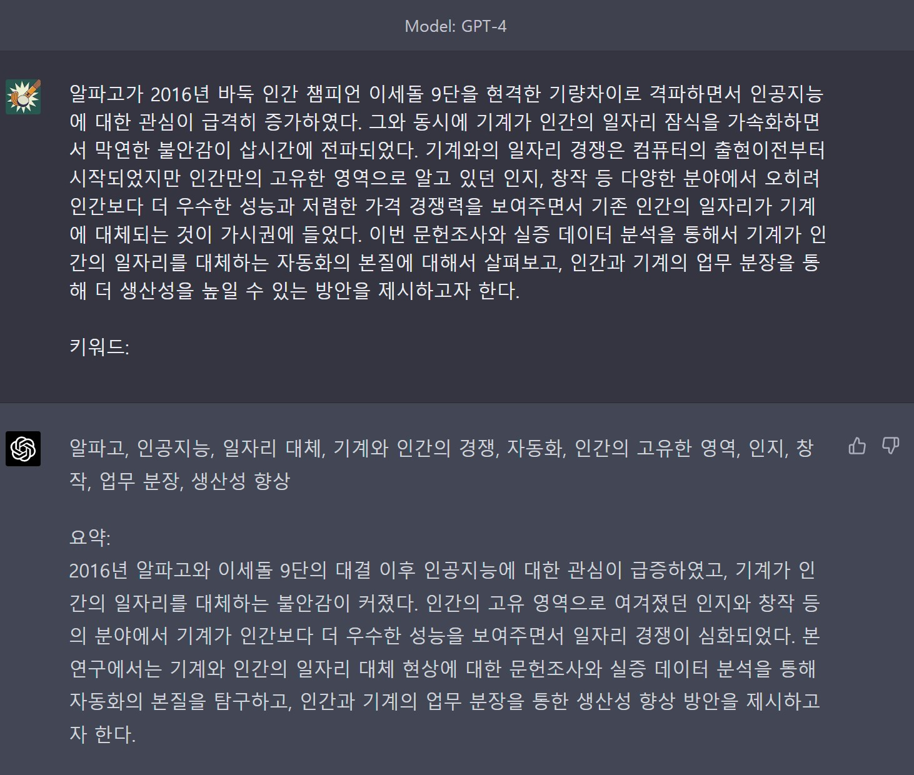

2 GPT
2.1 텍스트 완성
GPT를 사용하여 다양한 작업을 수행할 수 있지만 가장 기본적인 작업은 글쓰기다. GPT가 생성형 AI로 해당 텍스트를 주어지면 나머지 텍스트를 해당 최대 토큰 크기(max_tokens) 길이만큼 텍스트를 생성해준다.
import os
import openai
openai.api_key = os.getenv("OPENAI_API_KEY")
complete_next = openai.Completion.create(
model="text-davinci-003",
prompt="나의 살던 고향은",
max_tokens=7,
temperature=0)
complete_next['choices'][0]['text']'\n\n나의'토큰 크기를 100으로 지정하면 제법 긴 텍스트를 출력한다. 영어 토큰에 최적화되어 있는 관계로 한글의 경우 토큰 낭비(?)가 심한 것으로 보인다. 고로 비용이 제법 나가는 점은 한국어로 작업을 할 때 고려해야만 된다.
complete_next_100 = openai.Completion.create(
model="text-davinci-003",
prompt="나의 살던 고향은",
max_tokens=100,
temperature=0)
complete_next_100['choices'][0]['text']'\n\n나의 고향은 전라도 익산입니다. 익산은 전라도의 중부에 위치한 도시로, 전라도의 중'2.2 키워드 추출
조금더 흥미로운 주제로 해당 문서를 제시하고 관련 텍스트의 주요 키워드를 추출해보자. Attention Is All You Need 논문(Vaswani et al. 2017)은 AI 분야에서 획기적인 논문으로 평가받있지만 별도 키워드는 제시되고 있지 않아 논문 초록을 앞에 제시하고 Keywords:를 뒤에 두고 논문의 주요 키워드를 추출하게 한다.
prompt_keywords = "The dominant sequence transduction models are based on complex recurrent or convolutional neural networks that include an encoder and a decoder. The best performing models also connect the encoder and decoder through an attention mechanism. We propose a new simple network architecture, the Transformer, based solely on attention mechanisms, dispensing with recurrence and convolutions entirely. Experiments on two machine translation tasks show these models to be superior in quality while being more parallelizable and requiring significantly less time to train. Our model achieves 28.4 BLEU on the WMT 2014 Englishto-German translation task, improving over the existing best results, including ensembles, by over 2 BLEU. On the WMT 2014 English-to-French translation task, our model establishes a new single-model state-of-the-art BLEU score of 41.8 after training for 3.5 days on eight GPUs, a small fraction of the training costs of the best models from the literature. We show that the Transformer generalizes well to other tasks by applying it successfully to English constituency parsing both with large and limited training data.\n\n keywords:"
keywords = openai.Completion.create(
model="text-davinci-003",
prompt=prompt_keywords,
temperature = 0.5,
max_tokens = 50)
keywords['choices'][0]['text']max_tokens을 50으로 제한하여 temperature = 0.5로 너무 창의적이지 않게 키워드 추출 작업을 지시한 경우 다음과 같은 결과를 어덱 된다.
'\nSequence transduction, neural networks, attention mechanisms, machine translation, parsing'이번에는 한글 논문초록에서 키워드를 추출해보자. 2020년 출간된 논문(lee2020?)의 한글 초록에서 제시된 키워드와 OpenAI GPT가 제시하고 있는 키워드와 비교해보자.
prompt_keywords = "알파고가 2016년 바둑 인간 챔피언 이세돌 9단을 현격한 기량차이로 격파하면서 인공지능에 대한 관심이 급격히 증가하였다. 그와 동시에 기계가 인간의 일자리 잠식을 가속화하면서 막연한 불안감이 삽시간에 전파되었다. 기계와의 일자리 경쟁은 컴퓨터의 출현이전부터 시작되었지만 인간만의 고유한 영역으로 알고 있던 인지, 창작 등 다양한 분야에서 오히려 인간보다 더 우수한 성능과 저렴한 가격 경쟁력을 보여주면서 기존 인간의 일자리가 기계에 대체되는 것이 가시권에 들었다. 이번 문헌조사와 실증 데이터 분석을 통해서 기계가 인간의 일자리를 대체하는 자동화의 본질에 대해서 살펴보고, 인간과 기계의 업무 분장을 통해 더 생산성을 높일 수 있는 방안을 제시하고자 한다.\n\n 키워드:"
keywords = openai.Completion.create(
model="text-davinci-003",
prompt=prompt_keywords,
temperature = 0.5,
max_tokens = 100)
keywords['choices'][0]['text']' 인공지능, 자동화, 인간과 기계의 업무 분장, 생산성 \n\n이 문헌조사는 인공지능이 인'GPT가 생성한 키워드를 논문저자가 추출한 키워드와 비교하면 다소 차이가 있지만 그래도 상위 3개 키워드는 높은 일치도를 보이고 있다.
OpenAI GPT 키워드
- 인공지능
- 자동화
- 인간과 기계의 업무 분장
- 생산성 문헌조사는 인공지능이 인’
논문저자 추출
- 자동화
- 데이터 과학
- 인공지능
- 일자리
- 기계와 사람의 업무분장
GPT-4는 더 높은 성능을 보여주고 있다. https://chat.openai.com/chat?model=gpt-4에 해당 텍스트를 던져주면 다음과 같이 키워드를 추출하고 요약을 해준다.

2.3 텍스트 요약
Attention Is All You Need 논문(Vaswani et al. 2017) 초록은 https://platform.openai.com/tokenizer 계산기를 통해 230개 토큰 1,138 문자로 작성된 것이 확인된다. 영어 기준 다음과 같은 맥락을 이해하고 이를 대략 20% 수준 50 토큰으로 줄여보자.
- 100 토큰은 대략 75 단어
- 평균 단어는 대략 5 문자로 구성
- 100 토큰은 375개 문자
prompt_keywords = "The dominant sequence transduction models are based on complex recurrent or convolutional neural networks that include an encoder and a decoder. The best performing models also connect the encoder and decoder through an attention mechanism. We propose a new simple network architecture, the Transformer, based solely on attention mechanisms, dispensing with recurrence and convolutions entirely. Experiments on two machine translation tasks show these models to be superior in quality while being more parallelizable and requiring significantly less time to train. Our model achieves 28.4 BLEU on the WMT 2014 Englishto-German translation task, improving over the existing best results, including ensembles, by over 2 BLEU. On the WMT 2014 English-to-French translation task, our model establishes a new single-model state-of-the-art BLEU score of 41.8 after training for 3.5 days on eight GPUs, a small fraction of the training costs of the best models from the literature. We show that the Transformer generalizes well to other tasks by applying it successfully to English constituency parsing both with large and limited training data.\n\n summary:"
keywords = openai.Completion.create(
model="text-davinci-003",
prompt=prompt_keywords,
temperature = 0.5,
max_tokens = 50)
keywords['choices'][0]['text']상기 논문 초록을 50개 토큰으로 요약하면 다음과 같이 48개 토큰, 277 문자수로 요약해준다.
'\n\nThe Transformer is a new neural network architecture based solely on attention mechanisms, which is shown to outperform existing models on two machine translation tasks. It is more parallelizable and requires significantly less time to train than existing models, achieving a B'2.4 여론조사 할일 생성
todo_list = openai.Completion.create(
model="text-davinci-003",
prompt="여론조사를 위해서 해야될 일을 작성하세요\n\n1.",
temperature=0.3,
max_tokens = 1000,
top_p = 0.1,
frequency_penalty=0,
presence_penalty=0.5,
stop=["6."]
)
todo_list['choices'][0]['text']' 여론조사 대상자를 선정하고, 여론조사 대상자의 수를 결정합니다.\n\n2. 여론조사 대상자들에게 여론조사 질문지를 배포합니다.\n\n3. 여론조사 대상자들에게 여론조사 응답을 요청합니다.\n\n4. 여론조사 응답을 수집하고, 분석합니다.\n\n5. 여론조사 결과를 보고서로 작성합니다.'